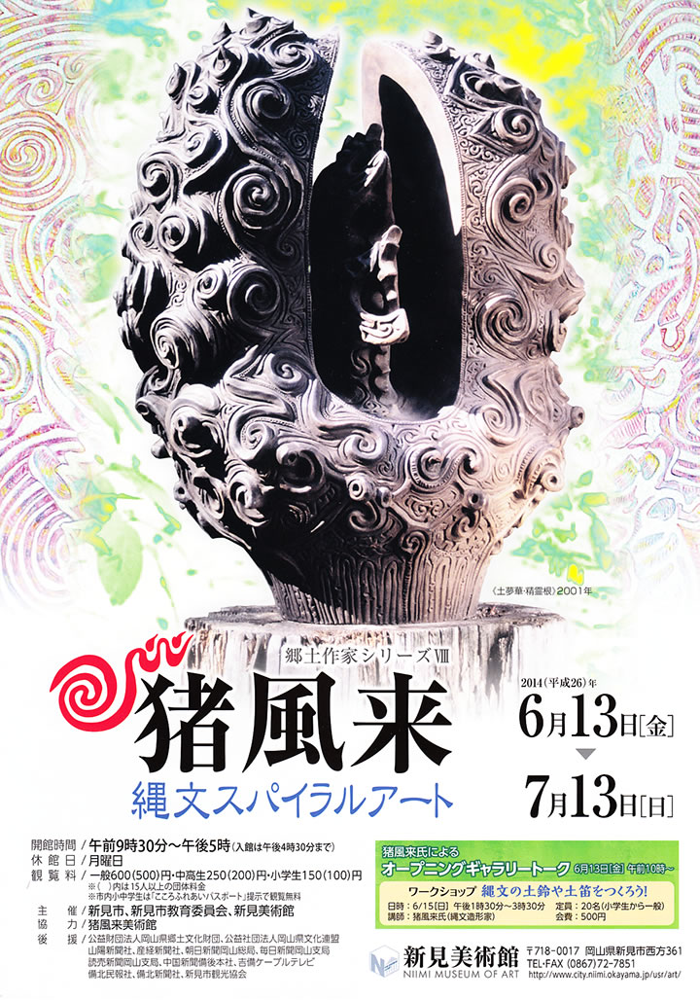

猪風来(1947-）は、広島県福山市に生まれ、1976年頃から縄文土器復元を志し、千葉県加曾利貝塚博物館
土器づくり同好会に参加し、縄文野焼き技法を復活させました。
1986年からは北海道に移住し、竪穴式住居をアトリエに、20年間の自給自足の縄文暮らしと制作活動を
続け、「生命のシリーズ」「情念シリーズ」「森羅万象シリーズ」「土夢華シリーズ」などを創作。
2005年からはその活動拠点を新見市法曽に移し、地元に伝わる法曽焼を150年ぶりに復活。
法曽焼陶磁器技法と縄文造形文様世界を融合させた新たな作品群「大霊峰シリーズ」を創作するなど、
現代縄文アーティストとして活躍しています。
本展では、猪風来の縄文造形文様を駆使した野焼き作品から「虚空へ」「土夢華シリーズ」「情念」
「縄文赤漆作品」を、また新たな地平を開く「大霊峰シリーズ」や「彩色縄文文様画」などを展示し、
縄文スパイラルの世界を紹介します。
■新見美術館 → 公式サイト
=∴=∵=∴=∵=∴=∵=∴=∵=∴=∵=∴=∵=∴=∵=∴=∵=∴=∵=∴=∵=∴=∵=∴=∵=∴=∵=∴=
〈ギャラリートーク〉
猪風来氏による展示作品解説
■ ６月１３日（金）午前１０：００～
〈ワークショップ〉
「縄文の土鈴や土笛をつくろう！」
■ ６月１５日（日）午後１：３０～３：３０
■ 講師 猪風来氏（縄文アーティスト）
■ 会場 新見美術館市民ギャラリー
|  |
| 【猪風来 現代縄文スパイラルアート展チラシ】 →（表面）PDF版を開く →（裏面）PDF版を開く |